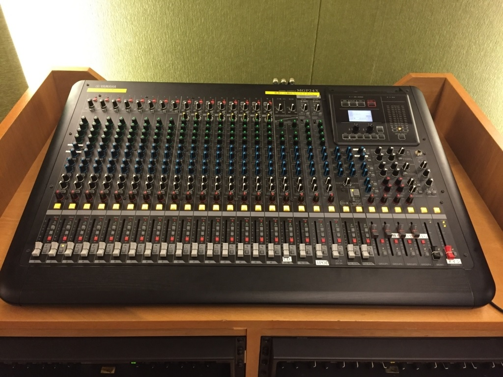
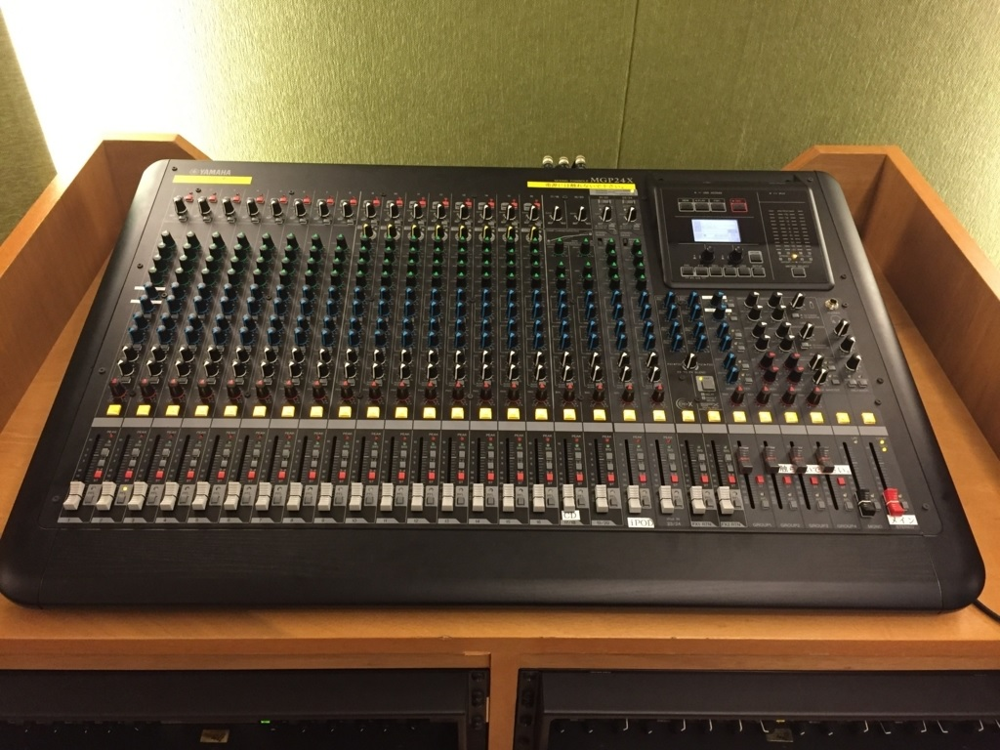

趣味
ギター弾き語り
どんな曲でもコードが分かれば弾くことができます。U-fretというサイトを見ながら、弾き語りができます。リクエストお待ちしております。
アカペラ多重録音
自分の声だけで音楽を作ることができます。基本的には楽譜も自分で作っております。

どんな曲でもコードが分かれば弾くことができます。U-fretというサイトを見ながら、弾き語りができます。リクエストお待ちしております。
自分の声だけで音楽を作ることができます。基本的には楽譜も自分で作っております。
